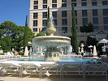
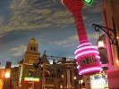
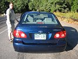
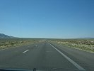
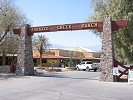
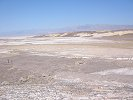
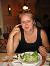

|
|
|
lornaland.co.uk Holidays Photo Gallery Lornaland Natter USA 2005 Journal Menu...New YorkBoston Cooperstown Buffalo Las Vegas Death Valley Yosemite National Park San Francisco San Simeon Los Angeles San Diego Death Valley Pictures |
Death Valley16th September 2005Friday 16th September 2005 (...by Dan) Today was supposed to be the day we got up early, got packed and drove off to Death Valley. We did get there in the end, but the early start failed to happen. It's just to hard to leave the luxury behind!  We ended up by the pool at 9.00am or so. I was a little rushed to do very much relaxing but I enjoyed the chance to read and people-watch. Lorna, meanwhile topped up her tan, which is mainly concentrated on her face and arms due to the hectic nature of the trip.  We decided to have brunch by the pool "snack" bar which turned out to be the poshest breakfast I've ever had. Lorna had a Full English, masquerading as a Full American. The hash brown made me jealous until my smoked salmon bagel arrived. Both meals were laid out in a snazzy restaurant sort of way, huge plates with a pile of salmon here, an onion ring encircling a heap of capers there. Top banana! Another $50 on the room, but well worth it. There was just time for a last dip in the pool before we hit the road.  Packing was easy saying as we had a new bag for presents and souvenirs. We left the luggage with the porter and paid the $400 room bill for drinks and meals and headed off to the Aladdin to pick up the hire car.  There was time for a tour of Aladdin which has an indoor sky more impressive than the Venetian in my opinion and even a 2-4-1 sorbet while watching the indoor rain storm before we found the car hire desk. The man at the desk was an utter and total pain in the ass but eventually we got our car - a blue Toyota Corolla, christened Colin. Back to the Bellagio to pick up the bags then via a brief period of lostness, to the open road and into the desert.  Colin has cruise control and the desert roads are long and straight so the drive was uneventful. Set at a constant 70mph the only thing for me to do, as today's driver, was ensure we stayed pointed in the right direction for over 100 miles. America is BIG! Death Valley is big and empty, hot and dry. It's also the lowest point in the USA. The mountains around it rise to 5000 feet so it's like being fried in a huge dry pan!  we headed directly for our next lodging, the Furnace Creek Ranch, which turned out to be a trailer park and golf course exactly in the middle of nowhere. We stayed in a small semi-detached chalet cabin thing next door to a pair of aged American liberals who claimed to have hobnobbed with MP's in England and assured us that not all Americans approved of the war in Iraq. A welcome if unlooked for comment! Dinner at Furnace Creek Ranch was, not to put to fine a point on it, VILE. A couple of pints of Sam and a pair of G&T's and we hit the sack |